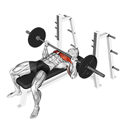

Paint Your Day
Swipe blocks with your thumb. Set your day in 10 seconds.

Focus Deeply
Watch your lectures without falling into random videos.

Honest Screen Time
Tracks your phone use automatically from the moment you wake up.

Move Your Body
Simple exercise form guides and daily step counts.

Real Restful Nights
Bedtime screen reminders so you wake up refreshed.
Your Study Buddy
Personal advice when you're overwhelmed or feeling stuck.
Paint With Your Finger
Drag your thumb across the slots: blue for study, yellow for workout, purple for sleep. Your schedule is ready in under 15 seconds.
Alarms That Actually Ring
When study time arrives, your phone actually rings out loud. Even if your screen is off, even in battery-saver mode.
Automatic Shield On
The moment a study block starts, your distraction blocker turns on automatically. When the session finishes, it turns off.
Educational Lectures & Courses
Study physics, coding, calculus, or exam prep on YouTube with zero interruptions. Learn at your own pace without blockers getting in the way.
Casual Entertainment Videos
If you drift away into gaming streams or reaction videos, a soft audio reminder sounds after 15 seconds: “Hey, stay on track!”
Ongoing Countdown Ticker
Swipe down your notification shade anytime to see: “Physics: 18 minutes remaining”. Keeps you grounded.

Bench Press Form Bodyweight Pushups
Bodyweight Pushups
40+ Animated Exercise Guides
Never feel awkward at the gym or at home. Watch clear animations showing exact form so you lift safely and effectively.
Daily Calorie & Energy Goals
Keep track of whether you're eating enough to fuel your brain (e.g., 2,000 kcal goal) right on your Home screen.
Automatic Step Counter
Uses your phone's built-in step sensor. Counts your daily walks across campus without draining your battery with GPS.
Zero Manual Effort
You never have to type how many minutes you spent on Chrome or WhatsApp. Productometer reads your actual usage automatically.
Shorts & Reels Swipe Counter
Ever wonder how many quick videos you swiped through? Our swipe sensor counts them so you can see where your time went.
Red Only When Things Go Wrong
We don't spam you with scary red warnings for checking a text. Red color is strictly saved for when screen time gets excessive, keeping your mind calm.
15-Minute Night Screen Reminder
When bedtime is close, a gentle screen reminder helps you put the phone down, breaking the late-night doomscroll loop.
Alarms That Never Fail
Our alarms bypass silent modes and low battery optimizers to wake you up loud and clear when your morning routine begins.
Restarts Automatically
If your phone battery died and restarted overnight, your alarms and study schedules re-arm themselves automatically.